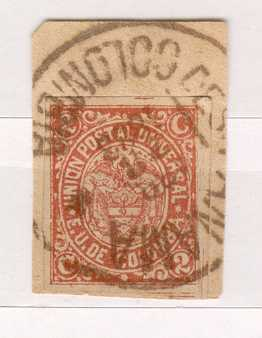
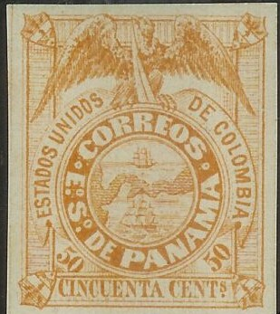
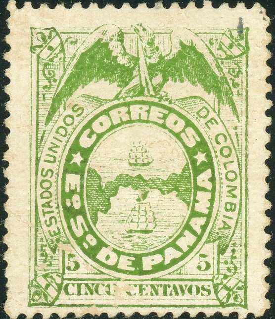
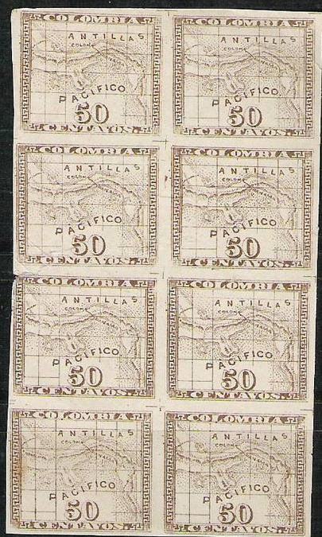
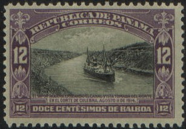
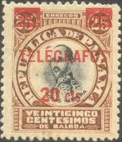

Return To Catalogue - Panama-Canal - Colombia overview
Note: on my website many of the
pictures can not be seen! They are of course present in the
catalogue;
contact me if you want to purchase it.
Panama used to be a department of the Republic of Colombia. In 1903 it became an independent republic.


5 c green 10 c blue 20 c red 50 c yellow
Value of the stamps |
|||
vc = very common c = common * = not so common ** = uncommon |
*** = very uncommon R = rare RR = very rare RRR = extremely rare |
||
| Value | Unused | Used | Remarks |
| 5 c | R | R | Reprint: * |
| 10 c | RR | RR | Reprint: ** |
| 20 c | R | RR | Reprint: * |
| 50 c | R | RR | Reprint: * |
These stamps were printed on thick or thin paper.
'Reprints' exist of all 4 values from retouched stones with unclear printing in slightly different color shades. The original 10 c has the upper left shield empty, while the reprint doesn't.
Reprints of the 5 c value, reduced sizes

A Michelsen reprint.

Reprint.

Perforated reprint? The upper left shield is not empty in the 10
c value. The 5 c seems to originate from the same source.
Forgeries of these stamps, sold by Fournier:
The 5 c genuine exists in different shades: grey-green, blue-green and yellow-green. The 5 c Fournier forgery has a grey-green colour (but a shade darker than the genuine grey-green stamps). The 10 c blue Fournier forgery also has a darker shade than the genuine stamp and a rectangle all around the stamp (much thicker than in the originals, which is hardly visible). The 20 c Fournier forgery is done in pale orange (instead of rose in the genuine stamps). There are also slight changes in the design in the Fournier forgeries when they are compared with genuine stamps (if anybody possesses more information, please contact me!).
The forger Sperati made a deceptive forgery of the 10 c value. The distinguishing characteristics can be found in the BPA book. Sorry, no image available.

A perforated Michelsen essay 2 1/2 c lilac
Other non-issued stamp?:
Reduced size, 5 c green on green


1 c black on green 2 c black on red 5 c black on grey 10 c black on yellow 20 c black on lilac 50 c brown on grey
These stamps have perforation 13 1/2.
Value of the stamps |
|||
vc = very common c = common * = not so common ** = uncommon |
*** = very uncommon R = rare RR = very rare RRR = extremely rare |
||
| Value | Unused | Used | Remarks |
| 1 c | * | * | |
| 2 c | ** | ** | Value in solid black |
| 5 c | ** | * | |
| 10 c | * | * | |
| 20 c | * | ** | |
| 50 c | * | ** | |
Surcharged (1894)
'5 CENTAVOS' (red, two types) on 20 c black on lilac '10 CENTAVOS' (red, two types) on 50 c brown on grey
Value of the stamps |
|||
vc = very common c = common * = not so common ** = uncommon |
*** = very uncommon R = rare RR = very rare RRR = extremely rare |
||
| Value | Unused | Used | Remarks |
| 5 c on 20 c | *** | *** | |
| 10 c on 50 c | *** | *** | |
Reprints exist, (made in 1895?) the
distinguishing characteristics are:
For the 1 c, 2 c and 5 c, the paper is of a much darker shade
10 c: there is a scratch in the left hand side pattern (at the
fourth meridian)
20 c: in the left lower outer border has been repaired
50 c: 2 dots in the left outside the frame (at the first and
second meridian)
The reprints also exist in fancy colors, partially perforated and
imperforate.

From the same source as the above reprints, some reprints in fancy colors were made of a registration label of 1888 (original color: black on grey) in black on green, black on yellow, black on blue, black on orange and black on red.
With typical cancel
1 c green 2 c red 5 c blue 10 c orange 20 c violet 50 c brown 1 P red
These stamps have perforation 12.
Value of the stamps |
|||
vc = very common c = common * = not so common ** = uncommon |
*** = very uncommon R = rare RR = very rare RRR = extremely rare |
||
| Value | Unused | Used | Remarks |
| 1 c | * | * | |
| 2 c | * | * | |
| 5 c | ** | * | |
| 10 c | * | * | |
| 20 c | * | * | |
| 50 c | * | * | |
| 1 P | *** | *** | |
Overprinted 'HABILITADO 1894 1 CENTAVO'
1 c on 2 c red (two types of overprint, '1' different)
Value of the stamps |
|||
vc = very common c = common * = not so common ** = uncommon |
*** = very uncommon R = rare RR = very rare RRR = extremely rare |
||
| Value | Unused | Used | Remarks |
| 1 c on 2 c | * | * | |
Various overprints with 'PANAMA' exist:
With 'R COLON', 'AR' or 'R' overprint
'R COLON' in a circle on 10 c, 'AR' in ellipse on 10 c and larger
'R' on 10 c
With 'AR COLON' overprint
1 c green 2 c red
(Reduced size, image obtained from http://berg.heim.at/kaprun/430320/01-Lehr/01/06/s_2.htm)
2 1/2 c red (RETARDO) 5 c blue (AR) 10 c green (R)
1/2 c yellow, red, blue and green (flag) 1 c green and black (Balboa) 2 c red and black (Cordova) 2 1/2 c red (arms of Panama) 5 c blue and black (Arosemena) 8 c lilac and black (Hurtado) 10 c violet and black (Obaldia) 25 c brown and black (Herrera) 50 c black (Fabrega) Surcharged 'R 5 cts' on 8 c lilac and black (1917)
1/2 c orange (map of Panama) 1 c green and black 2 c orange and black 2 1/2 c red (arms) 5 c blue and black 8 c lilac and black 10 c violet and black Overprinted 'AR' on 2 1/2 c red (1917) Surcharged 'R 5 cts' on 8 c lilac and black (1917) 'RETARDO UN CENTESIMO' on 1/2 c orange
2 1/2 c green (two shades)

1/2 c olive and black 1 c green and black 2 c red and black 2 1/2 c orange and black 3 c lilac and black (Palacio de Artes) 5 c blue and black 10 c orange and black 12 c violet and black (ship in Panama-Canal) 15 c blue and black (ship in Panama-Canal) 20 c brown and black (Exposicion de Panama) 24 c brown and black 50 c orange and black 1 B violet and black Overprinted '1519 1919 2 CENTIMOS 2' on 2 1/2 c orange and black

1 c brown 2 c brown 4 c brown 10 c brown
These stamps have perforation 12.
Value of the stamps |
|||
vc = very common c = common * = not so common ** = uncommon |
*** = very uncommon R = rare RR = very rare RRR = extremely rare |
||
| Value | Unused | Used | Remarks |
| All values | ** | ** | |


'AR' 5 c label of Colombia, with overprint 'A.R. COLON COLOMBIA'
in violet
Returned letter labels, inscription 'CIERRE OFICIAL':
(1922, exist in two types: red and blue or: blue and red)
(1929)
Another returned letter stamp was issued in 1924 (rectangular with arms in the center, color violet)
(Reduced size)
The values 5 c green on blue, 10 c red on yellow and 20 c blue on red were issued.

The values 1 c green and red (overprint red, overprint horizontal), 2 c red and black, 10 c violet and black (2 types of overprint, horizontal and oblique on 2 different stamps), 25 c brown and black and 50 c black (overprint red) were issued in the 'famous persons' design. Furthermore an overprint 20 c (red) on 25 c brown and black (see picture above). In the 'map' design were issued: 1/2 c orange and 5 c on 1/2 c red.
In 1919 some more telegraph stamps were issued: 'TELEGRAFOS' overprinted on fiscal stamps (3 values, rare).


{kind=link}
{kind=link}
{kind=link}